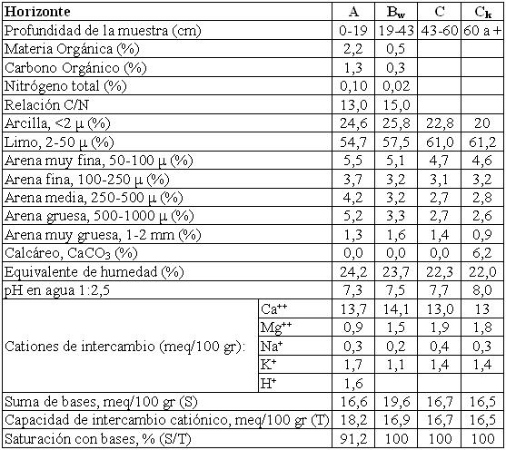

Haplustol típico, franca fina, mixta, térmica
Capacidad de uso: IIIc
Este suelo se ha desarrollado sobre sedimentos de derrames fluviales distales bastante alejados de las sierras, al Este de la Ruta Nacional Nº9, en ambientes de relieves suavemente ondulados. El perfil es bien drenado, se trabaja con facilidad y está débilmente desarrollado en profundidad, con limitantes climáticas moderadas y buena retención de humedad. Presenta un horizonte A de 19 cm de color oscuro, franco limoso y estructura en bloques. Continúa hacia abajo hasta los 43 cm un horizonte B no textural con escasos barnices finos en las caras de los agregados y estructura en prismas y bloques débiles. A partir de la profundidad indicada aparece el material originario franco limoso, masivo, con carbonatos libres a partir de los 60 cm.
Descripción del perfil típico:
Un perfil representativo de esta Serie fue descrito a 15 km al NNE de Jesús María, departamento Totoral, provincia de Córdoba.
A 0-19 cm; color en húmedo pardo grisáceo muy oscuro (10YR3/2); franco limoso; estructura en bloques subangulares medios moderados; friable en húmedo; no plástico; no adhesivo; pH 7,3; raíces abundantes; límite inferior claro, suave.
Bw 19-43 cm; color en húmedo pardo oscuro (10YR3/3); franco limoso; estructura en bloques y prismas moderados a débiles; friable en húmedo; ligeramente plástico; no adhesivo; pH 7,5; escasos barnices finos de arcilla y humus; raíces abundantes.
C 43-60 cm; color en húmedo pardo a pardo oscuro (7,5YR4/4); franco limoso; masivo; no plástico; no adhesivo; friable en húmedo; pH 7,7; límite inferior abrupto, ondulado.
Ck 60 cm a +; color en húmedo pardo (7,5YR4,5/4); franco limoso; masivo; friable en húmedo; no plástico; no adhesivo; pH 8; moderada reacción al ClH en la masa del suelo.
Cuadro Nº20
Datos analíticos Serie LA EMILIA
Situación: Latitud: 30º50’S Longitud: 64º02’O Altitud: 500 m.s.n.m.

|